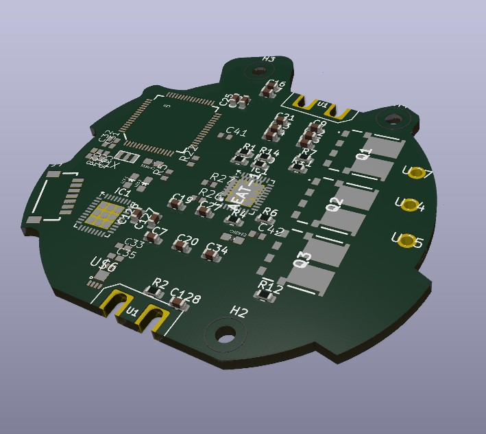

← All Projects
Guide Dog — Brushless Motor Driver & Reinforcement Learning
Motor Control · RLDesigned and built a 24-volt brushless motor driver that serves as a drop-in replacement for the stock Go2 motor drivers on Unitree robot dogs, enabling custom control strategies and lower-level hardware access.
The driver matches the physical and electrical interface of the original units while adding custom firmware support, giving full control over the field-oriented control loop and communication parameters.
Alongside the hardware work, I took on the challenge of using NVIDIA Isaac Sim and Isaac Lab to train reinforcement learning policies for the robot dog — bridging the gap between custom hardware and modern sim-to-real RL workflows.
